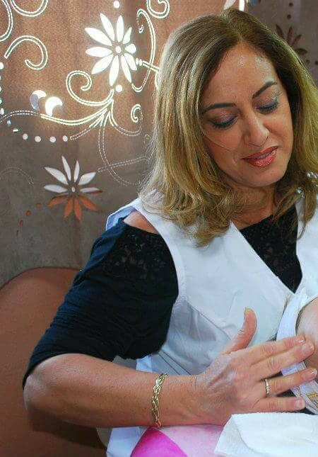
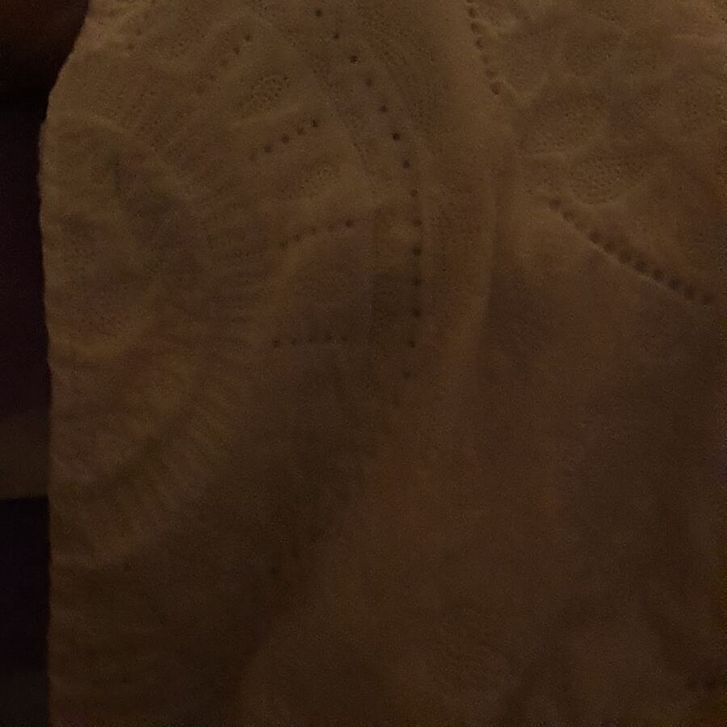
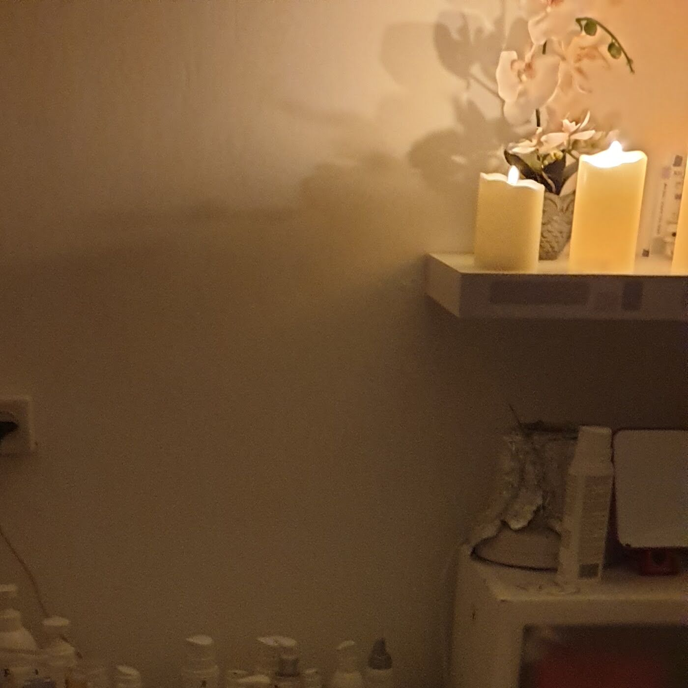

החומרים שלהHer products
״עובדת עם החומרים הטובים ביותר״“Works with the very best materials”
אידית אוחיון
קונספט לדוגמה שנבנה עבור סטודיו מלי · זה אינו האתר הרשמי של העסקA sample concept built for Studio Mali · This is not the business’s official website
סטודיו מליStudio Mali
מלי היא קוסמטיקאית, ומטפלת בפנים בסטודיו שלה ברחוב עמוס 22 בנשר.Mali is a cosmetician. She does facial treatments in her own studio at 22 Amos St, Nesher.
חדר טיפולים חם, עם נרות, מגבות לבנות ווילון פרחוני.A warm treatment room with candles, white towels and a flowered curtain.

כך כותבות עליה הלקוחות. רוצים לשאול על טיפול מסוים? כתבו למלי.That’s how her clients put it. Want to ask about a specific treatment? Write to Mali.
״עובדת עם החומרים הטובים ביותר״“Works with the very best materials”
אידית אוחיון
״אין ספק שאחזור אליה שוב״“No doubt I’ll be back”
Ido Dahan
תמונה להמחשהIllustrative photo


לקוחה של מלי קרוב לעשר שנים ולא מחליפה אותה לעולם!!! מלי מתמחה בכל סוגי טיפולי הפנים שיש בתחום, מאוד מקצועית, מסורה, בעלת ותק וניסיון רב.I’ve been Mali’s client for almost ten years and I’d never switch!!! Mali specialises in every kind of facial treatment there is, very professional, devoted, with long experience.
מלי מלכה. יחס אישי נעים ומכבד, מקצועיות ברמה גבוהה, המקום בסטנדרט גבוהה והשירות איכותי ללא פשרות. כיף להגיע […] ממשיכה להגיע אפילו שעברתי ודרושה לי עכשיו שעה של נסיעה לכיוון.Mali is a queen. Warm, respectful personal attention, a high level of professionalism, a place of high standards and uncompromising service. It’s a pleasure to come […] I keep coming even though I moved and it’s now an hour’s drive each way.
מקצוענית אמיתית, עם נסיון ארוך שנים, עובדת עם החומרים הטובים ביותר, בנאדם מדהים ומעניקה את הלב והנשמה בטיפול. שינתה לי את הפנים מקצה לקצה!A true professional with many years of experience, works with the very best materials, an amazing person who puts her heart and soul into the treatment. She changed my face from end to end!
מלי קוסמטיקאית מקצועית ביותר. עושה עבודה מצויינת, אווירה נעימה. אשה מקסימה, ממליץ בחום. אין ספק שאחזור אליה שוב למגוון הטיפולים שקיימים אצלה.Mali is a highly professional cosmetician. Excellent work, a pleasant atmosphere. A lovely woman, warmly recommended. No doubt I’ll be back for the range of treatments she offers.
אני ממליץ בחום על כל השירותים של סטודיו מלי, אני מטופל אצל מלי שנים רבות. אשה מלאת ידע ומקצועית מאוד.I warmly recommend all of Studio Mali’s services; I’ve been Mali’s client for many years. A woman full of knowledge and very professional.
ממלאים, ונפתחת הודעה מוכנה למלי בוואטסאפ.Fill it in and a ready message to Mali opens in WhatsApp.
ברחוב עמוס 22 בנשר. המפה למטה.At 22 Amos St, Nesher. The map is below.
ראשון, שלישי, רביעי וחמישי 9:00–19:00. שני 16:00–19:00. שישי 9:00–13:00. שבת סגור.Sunday, Tuesday, Wednesday and Thursday 9:00–19:00. Monday 16:00–19:00. Friday 9:00–13:00. Closed on Saturday.
כן. גם גברים כותבים עליה ביקורות, ובתמונות העסק רואים גם גבר בטיפול.Yes. Men write reviews about her too, and the business’s photos show a man being treated.
הלקוחות כותבות על מגוון טיפולי פנים. על טיפול מסוים, הכי פשוט לשאול את מלי בוואטסאפ.Her clients write about a range of facial treatments. For a specific one, the simplest is to ask Mali on WhatsApp.